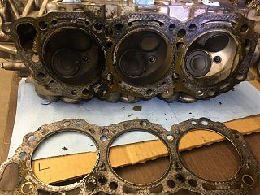
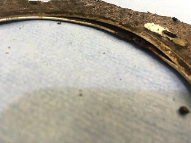
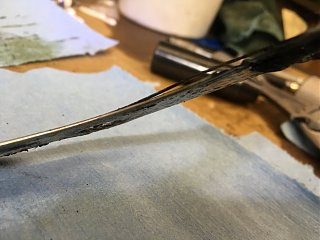

-
Hey all -
I'm new to this forum. I have a handful (literally) of Nissan Xterras that all have head gasket failures. This has been a known issue for many years (as I research it), but the engineer in me needs to find a solution, or perhaps even the root cause.
I have a handful (literally) of Nissan Xterras that all have head gasket failures. This has been a known issue for many years (as I research it), but the engineer in me needs to find a solution, or perhaps even the root cause.
After my research finally turned up the MLS HG from ASCO, and no other known MLS HG known to VG33E users anywhere (Xterra, Frontier, otherwise), I was excited to learn of this community using the OWO heads from the VG33E. I'm hoping someone might be able to shed some light the issue I have with the heads themselves, and see how you guys are handling it.
VG33E users have been experiencing HG failures for a long time. Many of these failures occur within the first 120,000 miles of a stock, never-been-opened engine. Nissan Corporate has no explanation of, or desire to address, this issue. Additionally, many owners experience repeat failures. I've seen posts from people having repeat failures, and even a few with three. It's hard to tell at this point (I did just start an official blown-HG registry on clubxterra.org) what is causing the repeat failures; it's likely an improper repair procedure is at the root, but we don't know yet.
I know this is more of a performance modification for you all to use the VG33E (OWO), and you probably drive your cherished vehicles a lot less than Xterra/Frontier owners (daily drivers and hundreds of thousands of miles), but I'm curious about whether or not you experience the same issue with the OWO heads.
So far, every set of heads I've removed require milling. Most beyond the .008" limit Nissan publishes in their FSM (this would also include any milling to the block). I did, however, just pull apart a JDM VG33E from an Nissan Elgrand, that was expected to have the average 50K-65K miles, that only required .005", but that is not the norm. The last set I pulled from a motor with 150,000 miles required .010".
Are you guys milling heads that far? Are you using and shims to make up the difference? I assume you aren't using a thicker head gasket, since I don't think there are any (yet). All the basic repair-level gasket makers are mimicking the OEM (.048" manufactured with 6% crush rate to about .045").
Does this affect your valve and ignition timing enough to worry about it? I can't imagine the compression level changes that much, but I plan to calculate it to know for sure. I'm still trying to located piston head volume and measure the combustion chamber volume in the head to be certain what is happening.
Ultimately, I'm trying to figure out the best practice I can find to best ensure a long running time on these head gaskets for Xterra and Frontier guys. I'm buying a lot of them in the used market and restoring them for resale, but I'm concerned about the gaskets. I would like to think this could be addressed and an expectation could be achieved for owners to get 200K+ miles on a head gasket. Is that achievable?
I've also considered some better head bolts, but ARP doesn't make a set…though I think I could put them together from the set you guys are using with your VG30 blocks. Having said that, theyh may not be affordable. I could probably afford to use a MLS HG, if I thought that would fix the issue, but we aren't boosted (for the most part), and added cost for block surface prep (from a machine shop) may make this expensive too.
Any thoughts?
Thanks for any insight you can offer.
Thanks! -
Pretty unheard of here I think. In my opinion, if the heads are warping then they are getting hot. It's not a poor cooling system design is it?Straya, +61 -
Ok, yeah I searched this site a bit and didn't see much for complaining about these issues.Originally posted by Timbo_021 View Post
A poor cooling design issue could be very possible. That certainly speaks to the failures being over a longer period of time (compared to blow-outs from high internal combustion pressures). If so, what are you guys doing different with the heads? I'm collecting data still, but it's possible cooling issues could be possible if the failures are occurring in the same place often.
The failure I have is in the back behind cylinder number #6 (on the south side of the cylinder bore). It disrupted the fire ring.
   -
Where are you guys typically getting your OWO heads? Also, are you measuring them to know if they've been milled? Perhaps I can just find them from another model that doesn't get so hot. The JDM heads I just purchased were better, requiring only .005", but were complete with the engine. I may need another head source.
I'll measure the combustion chamber volume today and see what I come up with. I'll also pull a piston and measure the volume of the head to get an idea of the total chamber volume.
-
Are there any marks from detonation on the piston? I actually had a blow out a while ago but this was because the engine ran lean and detonated down the 1/4 mile. Was at the rear on no.5 cylinder. But Yeah, as far as I know nobody hear goes into that much depth when they need to machine their heads. I just skimmed mine and put new gaskets on (did both banks anyway) and away I went, good as new.
My heads came from a Pathfinder VG33, early 2000's and the block is also Pathfinder but running VG30 crank. I believe most blokes use Pathfinder stuff on here too, not so much Xterra/Frontier.Straya, +61 -
Sorry for the delay, I thought I replied to this.Originally posted by Timbo_021 View Post
No evidence of detonation. As it turns out, both gaskets showed damage (I didn't think to look at the passenger side before, since the compression test didn't show much of a reduction to indicate an issue). They showed damage in the very same place (cylinder #1 on the passenger side since the passenger side head is mirrored from the driver side).
How did you "skim" the heads? The machine shop here had to go a full .010" to get the old gasket material off and make the head flat. I'm thinking that could be a part of the long term failures we are seeing. The heads are warped once removed. I did take in a second set of heads from a low mileage JDM engine I broke down to change the gaskets on. It only required .005" to get them flat. I'm not certain if this is due to the "lower mileage" condition of the engine, or that I removed the head bolts in about 15 degree increments, rather than 90 degrees (as called for my the FSM).
I know these engines (in the Xterra and Frontier) are failing early and often, BEFORE, the engines are ever opened, so I imagine there is a larger global issue, but it's hard to determine if this is due to heads warping. They are "warped" once removed, and removed as carefully as possible, but it's hard to say if they are warped before removal (I would guess they are), or the damage occurs during removal.
I have two more sets of heads (installed) on two more engines. One set if from a 97K mile USDM engine that through a rod. The second set in on a motor with 200K+ miles with a thrown rod (see a pattern developing here). I'll remove both sets of heads, removing the bolts in 15 degree increments, and see what each set requires to get flat (assuming they are visually in good shape otherwise, since it costs $100 a set to have milled, and the amount to be milled cannot be determined until it's actually performed). I imagine the damage is typically done with poor cooling on these vehicles. The cooling systems must not be well designed and causing premature failure to the head gaskets (which is likely the cause of the thrown rods on many of these engines, since coolant mixes with the oil and people still drive them around with coolant in the rod and main bearings).
-
Most of us run the upgraded 3 core radiator and when we blow HG is almost always from detonation, not over heating. Some of us including myself are into custom forged pistons with higher than stock compression ratios.Cha iro
enjoy building it yourself.
if it fails, fuck it.
at least you gave it a whirl. -
Yeah, I figured most of you guys using the VG33E for performance reasons, don't really put the same kind of miles on this engine as a daily driver Xterra or Frontier.Originally posted by Augustus Maximus View Post. Also, I'm suspecting the entire cooking system in the Xterra/Frontiree is simply inadequate. Do you guys log coolant temp and pressure? I do this on my performance MR2 builds, but never bothered on a daily driver. I wonder if the issue could simply be due to longe term coolant temps being elevated.
-
My VG33e came out of a 1999 Quest that my father daily drove until a few months before he passed. No issues then or now with 120k on it. I will disassemble for the sole reason of forging the internals for big power. The 0W0 head is no different from our W series except for 10mm exhaust studs and so called smoother casting in some placesLast edited by Augustus Maximus; 02-08-2017, 03:13 PM.Cha iro
enjoy building it yourself.
if it fails, fuck it.
at least you gave it a whirl. -
Interesting…did you mill the heads on the VG33 after you pulled it? I haven't looked at the Quest in person, or did much research and investigation, but I wonder if they had regular failures too. Most Xterra/Frontier occur between 120K and 180K. -
There's no reason blowing a head gasket it common, because its not - with proper setup method and maintenance. I've spun up a VG33ER and boosted a VG33ET to 330/390 @14lbs
Something in your method or maintenance is incorrect. Don't blame the engine for your failures. -
I'm trying to determine the problem, not place blame. I'm trying to help solve the issue WHY this occurs. None of these engines are mine, they are fellow forum enthusiasts and daily drivers of Xterra/Frontier. These owners are experiencing HG failures as early as 30,000 miles, 40,000 miles, 80,000 miles, but most commonly around 120,000. A high percentage of owners with as many as 180,000 miles on their engines have had a head gasket fail twice, and even three times. Unless you have your head in the sand, you would have to see a pattern emerging here.Originally posted by 88sinZ View Post Check out this link to some of the data I'm referring to: http://www.carcomplaints.com/Nissan/…d_gasket.shtml
There could be a maintenance issue here, but it's hard to determine. A lot of the first time failures are possibly due to improper maintenance, but if this is true, this motor is a high maintenance application in the Xterra/Frontier. HG's should simply not fail at 40,000 miles (could be an isolated incident, but still…). Does Nissan suggest changing the coolant before 40,000? Is it so sensitive that if you drove over 50,000 miles on it, you would blow a HG? Wow, ok…I'm just gonna say it…Nissan is NOT Toyota.
Other common lack of maintenance would be oil maintenance, right? I don't imaging a HG would be the typical failure if you didn't change the oil for 40,000 miles; more likely a spun bearing. I do see a regular failure of bottom ends too; mostly spun bearings. I have a suspicion HG's may have small (tears) failures, some of which owners probably don't even know they've failed. They do not have the signs of full-blown HG failure, other than cooling (overheating) issues. This leads to higher operating temps, reoccurring overheating issues, and ultimately full blown HG failure. During this process, oil is circulating with small amounts of coolant in it, causing lubrication issues in the bearings. People I've bought vehicles from admit to driving the vehicle several times and over several miles, with the full-blown failure. This could cause coolant to mix with oil in the bearings, and could reasonably cause damage to the bearings that a "repair" shop will never identify, because their job is simply to change the HG.
The whole point here is to help identify the problem. Admitting there is a problem is the first step.
Last edited by spddm0n; 02-14-2017, 06:45 AM. -
don't take it personal, im goin from a purely QA mech stand pont. The VG engine series is 1983 tech, if mech isn't followed it fails - but there's quite a bit of room for error here.
oil changes have nothing to due with mechanical failure until HIGHLY neglected.
I have over heated a VG33ER 2 times one crawling the beach, and one in +100F temp stand still traffic, only to pull over and water it down. Still pushing 140K on that engine. No coolant should be present in the oil - thats a major failure.
I come from the aviation field, where any failure/corrosion/compromise is not acceptable - i apply this philosophy to my vehicles and it works 100%. Lets face it these vehicles are pushing 30yrs old, they need component and hardware replacements along with seal and surface inspection. -
If the failures are common in one particular Nissan model then it could be that the cooling system is not operating 100%. Coolant may not be flowing completely at the front of the heads due to the radiator/header tank being too low, I notice on the LS3 engine that it has small bleed lines at the front of each head, Holden Commodores with the RB30 engine used to have head failures due to the radiator being too low. -
Poor oil maintenance is not likely the issue with HG failure, but is quite another issue. Oil drain-back appears to be an issue, so poor maintenance could be more consequential than we think and could be leading to premature wear on the bearings. I'll soon pull the engines that failed on the bottom ends too, to see what I can see. One of them through a rod through the block. Another engine just has severe rod knock, so possibly just a spun bearing.Originally posted by 88sinZ View Post
Regarding the HG's though, I think the issue is likely more likely caused by poor cooling. Keep you fingers crossed on 140K miles. I'm a mechanical engineer by education, so I share the failure/compromise curse with you. I've not yet been impressed with Nissan technology, when compared to Toyota. Just the lack of attention to the block casting saddens me. Of course, I'm making all my comparisons to the 3SGTE Toyota engine that is fairly bulletproof (a lot of us making 500 whp with no more than piston upgrades; some even tuned enough to make 500 reliably on stock cast pistons).
Last edited by spddm0n; 02-16-2017, 10:43 AM.

Copyright © 2006–. All rights reserved. Privacy Policy